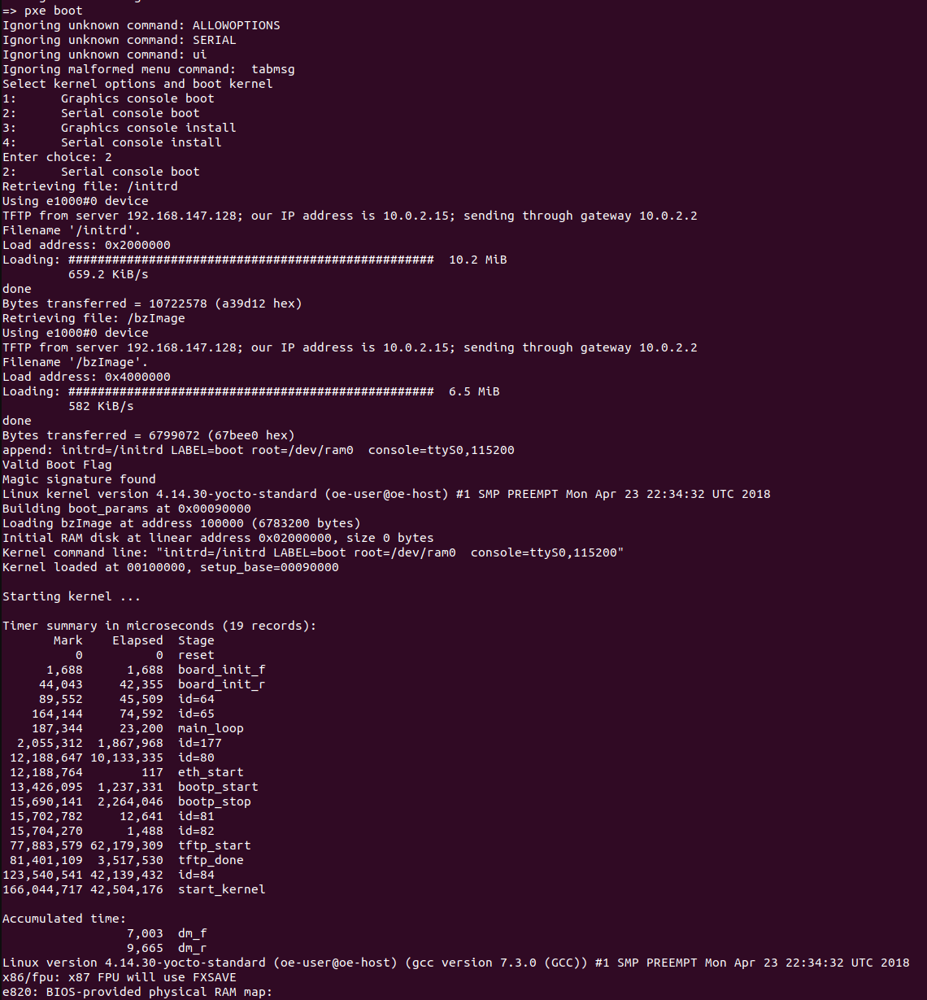

PXE Boot Through U-Boot Payload
Some users may prefer to boot their operating system over a network. This guide below shows how to achieve that using U-Boot as a payload for SBL.
We leverage existing PXE functionality in U-Boot to enable PXE boot.
Steps:
Set up a TFTP server for serving PXE boot files
U-Boot can be built as a payload for Slim Bootloader. Please refer to this page for generic build Instructions.
U-Boot Confiugration to enable PXE Boot Support
Below are steps for enabling PXE Boot support in U-Boot
After running
make slimbootloader_defconfigaccording to the guide linked above, run$ make menuconfig
Enable
pxeunder theCommand Line Interfacesection as shown.Enable
dhcpoption under theNetwork Commandssection insideCommand Line Interface.Enable
Use the 'serverip' env var for tftpunder theNetworking Supportsection as shown.Additionally, you might need to enable the driver for your system’s network controller.
Save the config through the menu. You can run
make savedefconfigto save this configuration. It will be saved in a file nameddefconfigin the root of your U-Boot source.
{kind=link}
{kind=link}
{kind=link}
U-Boot Device Tree Changes
Now, we need to add a few things to the U-Boot device tree for Slim Bootloader target to make sure that U-Boot is able to find the network device. Below are the steps for QEMU target -
Add the following code block to the
pcisection ofu-boot/arch/x86/dts/slimbootloader.dtsso it looks like this -pci { compatible = "pci-x86"; #address-cells = <3>; #size-cells = <2>; u-boot,dm-pre-reloc; ranges = <0x02000000 0x0 0x80000000 0x80000000 0 0x60000000>; };The
rangesproperty describes the MMIO window for PCI devices. You can get the starting address for this window from your platform’sBoardConfig.pyfile. It is listed asself.PCI_MEM32_BASE. In case of QEMU, the window starts at0x80000000.We can assume that the window extends up to the PCI Express Base Address (
self.PCI_EXPRESS_BASE), which is0xE0000000for QEMU.The last value in the ranges property describes the size of the MMIO window. Thus, we set it to
0x60000000.For more details on the PCI ranges property, you can refer to the device tree documentation here.
Build Slim Bootloader with U-Boot as Payload
Build U-Boot
Copy the generated
u-boot-dtb.binbinary toslimbootloader/PayloadPkg/PayloadBins/u-boot-dtb.bin.Set SBL’s
PayloadIdtoU-BT.Build Slim Bootloader with U-Boot as Payload.
$ python BuildLoader.py build <platform> -p "OsLoader.efi:LLDR:Lzma;u-boot-dtb.bin:U-BT:Lzma"
U-Boot Shell PXE Boot Commands
Once booted to U-Boot shell, enter the following commands to boot over the network.
=> dhcp => setenv serverip <tftp server address> => setenv pxefile_addr_r 0x1000000 => setenv ramdisk_addr_r 0x2000000 => setenv initrd_addr_r 0x3000000 => setenv kernel_addr_r 0x4000000 => pxe get => pxe boot
You should now see U-Boot load the operating system.
